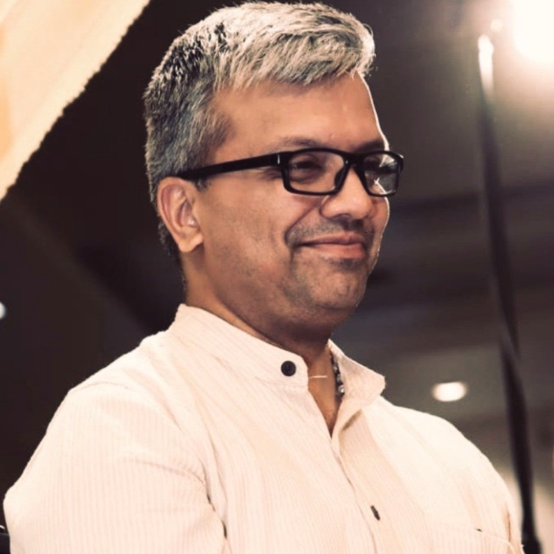

Our Journey
AlterFeels was born from a simple belief: that everyone deserves a space where they feel heard, understood, and supported. Life — with all its highs and lows — can often feel overwhelming, and we believe no one should have to navigate it alone.
Why We Exist
Whether you're feeling stuck in your personal world, seeking balance in your professional space, or just looking to reconnect with yourself — AlterFeels is a space to reflect, recalibrate, and realign.
We offer structured support sessions across various formats — be it expressive outlets like music and art, grounding practices like meditation, or simple, meaningful conversations.
Our approach is fluid and personal — we’re not here to "fix" but to walk with you.
What We Value
You’ll never be reduced to a checkbox here.
We're here to hear you — truly.
You set the pace, the mood, and the tone.
Hi, I'm Sudhan - Let's Chat

With over two decades of experience in global organisations — building products, shaping teams, mentoring minds — I’ve always been drawn to what makes us feel connected, creative, and truly heard.
My journey weaves together a love for music, art, and psychology with a deep commitment to people — understanding not just what is said, but also what remains unspoken. Whether guiding teams or holding space for individuals, I've found purpose in nurturing clarity, emotional insight, and authentic communication.
AlterFeels is an expression of that calling — a place where professional experience meets human curiosity, where structured support blends with soulful exploration, and where each person is met with intention, not instruction.
AlterFeels isn’t just a platform — it’s a reflection of everything I’ve learned, unlearned, and continue to explore about being human.
If you’re here, I’m glad our paths crossed. I hope this space gives you room to breathe, reflect, and reconnect.